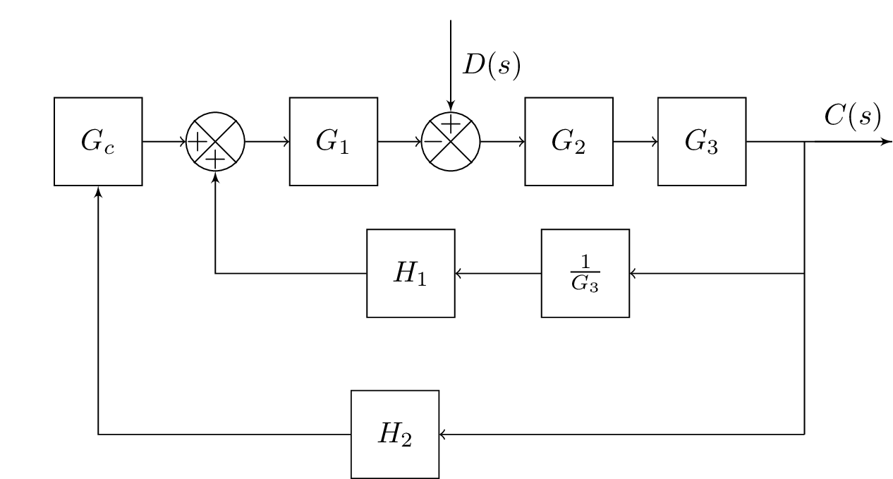

\documentclass{standalone}
\usepackage{blox}
\usepackage{tikz}
\usetikzlibrary{positioning}
\newcommand{\equal}{=}
\usepackage{tikz}
\usetikzlibrary{intersections}
\usepackage{tkz-euclide}
% Radius for arc over intersection
\def\radius{1.mm}
\tikzset{
connect/.style args={(#1) to (#2) over (#3) by #4}{
insert path={
let \p1=($(#1)-(#3)$), \n1={veclen(\x1,\y1)},
\n2={atan2(\y1,\x1)}, \n3={abs(#4)}, \n4={#4>0 ?180:-180} in
(#1) -- ($(#1)!\n1-\n3!(#3)$)
arc (\n2:\n2+\n4:\n3) -- (#2)
}
},
}
\begin{document}
\begin{tikzpicture}
\bXInput{input} % Input
%\bXBranchx[0]{input}{GcLeft}
%\bXComp{adder1}{input} % First adder
%\bXLink[$R(s)$]{input}{adder1} % Input Label
\bXBloc[1.5]{Gc}{$G_c$}{input} %BLock Gc
\bXSumb{adder2}{Gc} % second adder
\bXBloc[1.5]{G1}{$G_1$}{adder2} % G1 Block
\bXCompSum{adder3}{G1}{+}{}{-}{} % third adder --suma variant
\bXBloc[1.5]{G2}{$G_2$}{adder3} % G2 Block
\bXBranchy[-4.5]{adder3}{adder3up3} % adder3 up 3 units
\bXLink[$D(s)$]{adder3up3}{adder3}
%\bXBranchx[3]{G2}{G2Right15} % Right of G2 1.5 units
\bXBloc[1.5]{G3}{$G_3$}{G2} % G3 Block
\bXBranchx[3.5]{G3}{G3Right15} % Right of G3 1.5 units
\bXBranchy[4.5]{G3Right15}{invG3Right} % Right from G2 1.5 units right and 3 units down
\bXBloc[-9]{invG3}{$\frac{1}{G_3}$}{invG3Right} % H1 Block
\bXBloc[-9]{H1}{$H_1$}{invG3} % H1 Block
\bXBranchy[10]{G3Right15}{outputDown10}
\bXBloc[-15.5]{H2}{$H_2$}{outputDown10}
\bXOutput[3]{end}{G3Right15}
\draw[->] (Gc) -- (adder2);
\draw[->] (adder2) -- (G1);
\draw[->] (G1) -- (adder3);
\draw[->] (adder3) -- (G2);
\draw[-] (G3) -- (end);
%\draw[-] (G2Right15.center) -- (G2Right15Down3.center);
\draw[-] (G3Right15.center) -- (outputDown10.center);
\draw[->] (outputDown10.center) -- (H2);
\draw[->] (G2) -- (G3); % Connect G2 and G3
\draw[->] (invG3Right.center) -- (invG3);
\draw[->] (invG3) -- (H1);
\bXLinkxy{H2}{Gc}
\bXLink[$C(s)$]{G3Right15}{end} % Output Label
\bXLinkxy{H1}{adder2}
\end{tikzpicture}
\end{document}Created by David Li